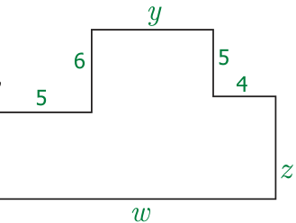
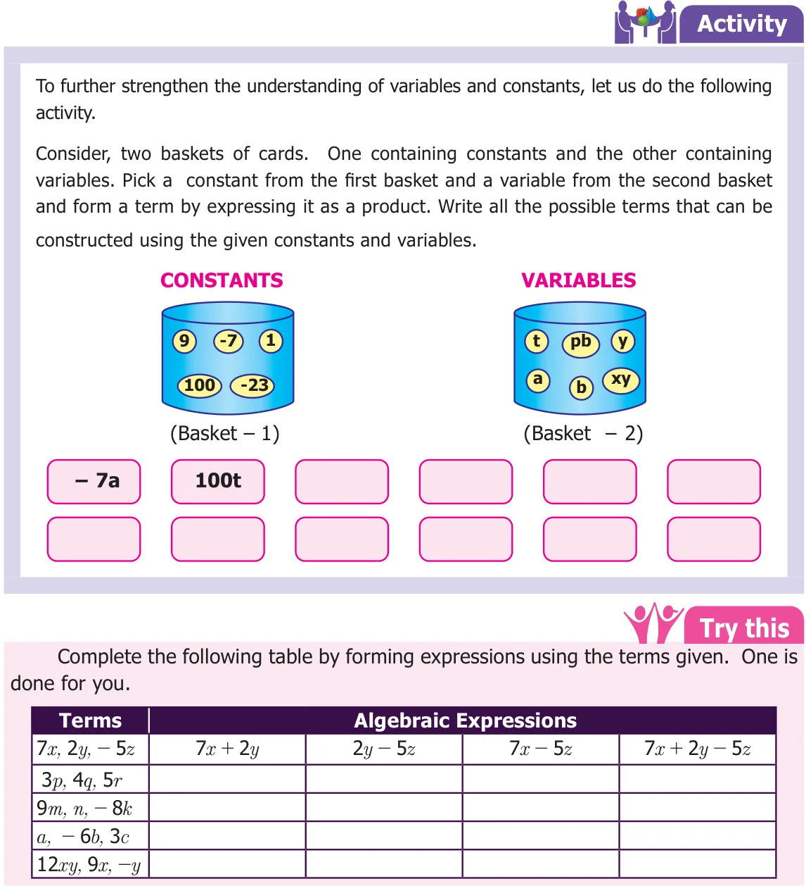
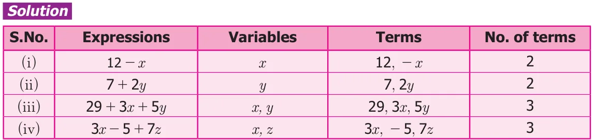
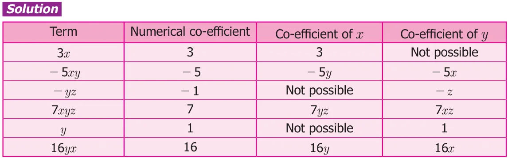

We combine variables and constants using the mathematical operations addition and subtraction to construct algebraic expressions. For example, the expression \(6x + 1\) is obtained by adding two parts 6x and 1. Here 6x and 1 are known as terms. The term 6x is a variable and the term 1 is a constant, since it is not multiplied by a variable. Also we say that 6, x are the factors of the term 6x.
Similarly, in the expression \(3ab + 5c\), the terms are 3ab and 5c. The factors of the term 3ab are 3, a and b. In the same way, the factors of the term 5c are 5 and c. Now let us further try to understand the terms of an algebraic expression. Observe the Fig.3.2

What is the perimeter of the given figure?
The perimeter, 'P' \(= x + 5 + 6 + y + 5 + 4 + z + w\) units,
\(= x + y + z + w + (5 + 6 + 5 + 4)\)
\(= x + y + z + w + 20\),
where x, y, z, w are variables and 20 is a constant. Fig.
Note that, in the above expression, 5 terms are combined by using addition.
Consider another example as \(6x - 5y + 3\). To find the terms of the expression, we write \(6x + (- 5y)+3\). Here the terms are 6x, \((- 5y)\) and 3. An expression may have one, two, three or more terms.
Also, a term may be any one of the following:
- a constant such as 8, \(- 11\), 7, - 1,…
- a variable such as x,a,p,y,…
- a product of two or more variables such as xy, pq, abc, ...
- a product of constant and a variable/variables such as 5x, \(- 7pq\), 3abc,…
Note
An algebraic expression can have one term, two terms or more than two terms. An expression with one term is called a monomial, two terms is called a binomial and three terms is called a trinomial. An expression with one or more terms is called a polynomial. For example, the expression 2x is a monomial, \(2x + 3y\) is a binomial, and \(2x + 3y + 4z\) is a trinomial. All the expressions given above are polynomials.

Example 3.1 Identify the variables, terms and number of terms in each of the following expressions: (i) \(12 - x\) (ii) \(7 + 2y\) (iii) 29+3x+5y (iv) \(3x - 5+7z\)

3.2.1 Co-efficient of a term
A term of an algebraic expression is a product of factors. Here each factor or product of factors is called the co-efficient of the remaining product of factors. For example, in the term 5xy, 5 is the co-efficient of remaining factor product xy. Similarly x is the co-efficient of 5y; 5x is the co-efficient of y. The constant 5 is called the numerical co-efficient, and others are called simply co-efficients. A co-efficient can either be a numerical factor or an algebraic factor or product of both. Since we often talk about the numerical co-efficients of a term, if we say "co-efficient", it will be understood that we are referring to the numerical co-efficient. If no numerical co-efficient appears in a term, then the co-efficient is understood to be 1. Consider the term \(- 6ab\). It is the product of three factors \(- 6\), a and b. Also it can be written as a product of two factors such as \(- 6a \times b\), \(- 6b \times a\) and \(- 6 \times\) ab. The co-efficient of 'a' is \(- 6b\) The co-efficient of 'b' is \(- 6a\) The co-efficient of 'ab' is \(- 6\) Thus \(- 6\) is the numerical co-efficient in the term \(- 6ab\). Example 3.2 Find the numerical co-efficient of the following terms. Also, find the co efficient of x and y in each of the term: 3x, \(- 5xy\), - yz, 7xyz, y, 16yx.
